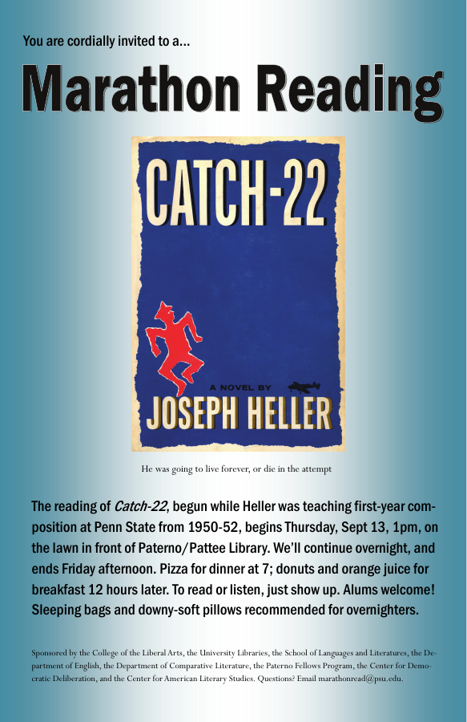
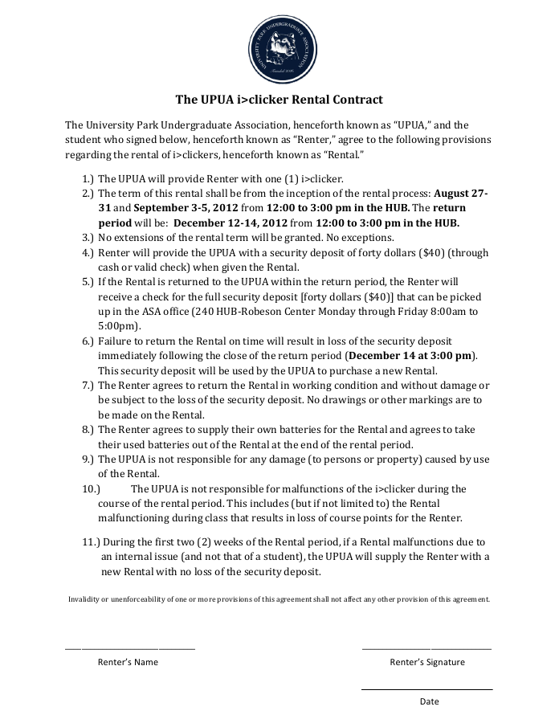

Events
Announcements
BONUS OPPORTUNITY
9/13-14
Big fat bonus opportunity!!! Read for the CATCH-22 Marathon!!! 10 Points for all Readers. 5 Points for all who go and write up a humorous account of their experience listening (1 Page)

FREE ICLICKER!!!!
Students, if you want a free i>clicker, pick-up will be from 12-3 PM in Room 314 HUB-Robeson Center during the dates of August 27th-31st and September 3-5 (first week and a half of classes). To get an i>clicker you will need a $40 deposit which will be returned at the end of the semester as well as a Penn State Student ID. For more information, read through the contract that is attached. If you still have additional questions, send an email to [email redacted].
